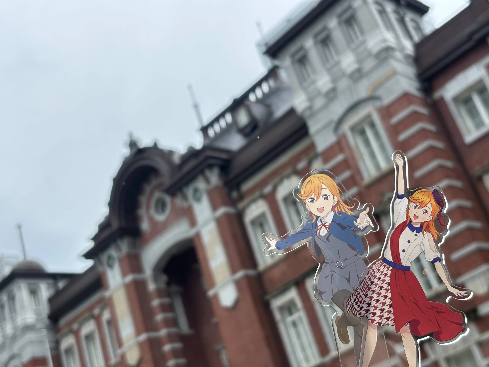

ラブライブ！スーパースター!! Liella! First Generation LoveLive! Wonderful Starlines 東京公演に参加しました。
なんだか久々に東京でライブな気がします。
1日目。今回も（？）東京駅からスタート。
水しぶきのサイン
会場が近いので昼まで寝られるので最高ですね。
東京駅でヲタクと合流して地下鉄とゆりかもめを利用して会場へ。
当初はバスで行こうと思っていたのですがヲタクにつられて謎ルートで向かいました。
会場着。
座席は2階、ステージから最奥と言っても良いぐらい端でした。
今回何故か最速で当選しているヲタクでも3階、4階に回される人が多いみたいです。
一体いつになったら最前を引けるのでしょうか…。
最前とは言わないのでせめてアリーナには降りたかったデス…。
そしてこの席、ステージに体を向けると必然的に隣のヲタクの方向を向かなくてはいけなく、ペンライトを強めに振る僕には不向きという事が判明しました…。
なんかこれ6thの東京公演2日目にも思ったな…。
ま、座席の感想はそんなトコロにして。曲の感想を…。
セットリストとしては大阪と変わらず。
新鮮味は無かったですが、やはり「Dream Rainbow」と「ユニゾン」が良かったです。
そしてこれは大阪の時には気づかなかったのですが、「Shooting Voice!!」の終盤の推しの伊達さゆりさんの顔が良かったです。表情管理カンペキ。
ふと帰りの電車で、もしかしたら、明日聴く曲はもう二度と聴けないかもしれないと思いました。
だからこそ、しっかり味わっておかないとなあとも思いました。
2日目。
2日連続で東京駅からスタート。
2日目もヲタクと合流したのですが、バスに乗車して会場へ。
東京駅始発のバスが出ているので少し待つなり工夫すれば座って会場まで行けるので便利という事に気づきました。
そして会場着。
2日目の座席も2階席だったのですが、初日と対象的に比較的ステージに近い側でした。
しかもなんと通路側を確保する事に成功。
という事で目一杯動けて、ペンライトを一生懸命振って、精一杯声を届ける事に成功。
ペンライト振りやすいって重要ですねという事に気づきました。
よっぽどペンライト振りづらいならば、スタンド最後列とかの方が楽しめるという事にも気づけました。
そういう意味では所謂席ガチャは大事。
さてライブの感想ですが、2日目のセットリストも基本的には変更は無かったですね。
これはこれである程度体力を使う配分とかが決めやすくて良いですね。
という事で特に感想も変わらずといった所…苦笑
しかしながら、やはりペンライトを一生懸命振って、声を精一杯出したので非常に楽しかったですね。異様に。
楽しさ的には4thの2日目、5thの1日目などを思い出す様な楽しさでした。
という事で席ガチャは非常に大事という事に気づいた2日間でした。
いや、これだと変な締め方ですね。推しがステージで輝く姿が良かったと感じた2日間でした。
ま、3日目（と言っていいのか…？）にはConnect the Starsがあるのですが…笑